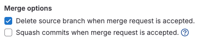
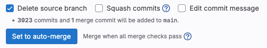

How To Add An Existing Git Repo To A Monorepo
At several points over the course of my career, I've found myself lifting business logic code out of a monolithic application for the purposes of reuse across multiple applications.
It's almost never appropriate to simply copy the current snapshot of the files in your main branch to a new directory and git init. If you leave good commit messages, the repository's commit history can document the reasons why code was changed. You should keep that if you can.
Depending on the intended consumers of your new business logic library, it may make sense for the new library to live in its own repository. This makes the code migration very easy. Fork the repo and start trimming away the application portions of the code. I've done this several times and the approach works well.
I recently found myself in need of a more complex migration at $JOB. The code is going to be migrated into an existing monorepo. For the purposes of this example, a repository called alpha is the existing application from which I'd like to harvest its business logic. A repository called omega is the monorepo I'm targeting.
Here's the process I followed to achieve this commit history transplant.
Step 1: Add the alpha remote temporarily to omega
Here's how my remote looks before I start:
jaysherby@framework13:~/omega$ git remote -v
origin git@github.com:hexpunk/omega.git (fetch)
origin git@github.com:hexpunk/omega.git (push)
Add alpha's remote. I'm calling it temp.
jaysherby@framework13:~/omega$ git remote add temp git@github.com:hexpunk/alpha.git
Optionally confirm it worked.
jaysherby@framework13:~/omega$ git remote -v
origin git@github.com:hexpunk/omega.git (fetch)
origin git@github.com:hexpunk/omega.git (push)
temp git@github.com:hexpunk/alpha.git (fetch)
temp git@github.com:hexpunk/alpha.git (push)
And don't forget to fetch from the new remote before continuing so branches from the new remote can be referenced.
jaysherby@framework13:~/omega$ git fetch temp
From github.com:hexpunk/alpha
* [new branch] main -> temp/main
* [new branch] staging -> temp/staging
Step 2: Make a new branch for this
Nothing particularly unusual here. Make a new branch for this change and switch to it.
jaysherby@framework13:~/omega$ git switch -c import-alpha main
Switched to a new branch 'import-alpha'
Step 3: Use the git subtree command to import all files and their histories
jaysherby@framework13:~/omega$ git subtree add --prefix=applications/alpha/ temp/main
Added dir 'applications/alpha'
You can see here that I've imported all of alpha's main branch (using the temp remote name) to the path applications/alpha. This brings all files' histories with it and adds a new commit with a commit message that looks like this:
Add 'applications/alpha/' from commit '123bf0fd7a82a76743adb0ce224a1987fe754093'
git-subtree-dir: applications/alpha
git-subtree-mainline: a2ac8af27a38f08d4774a4338c5c4a6ed0f24ff0
git-subtree-split: 123bf0fd7a82a76743adb0ce224a1987fe754093
Those three lines at the end are called trailers and they're a powerful and often overlooked feature of git commit messages.
These trailers are an artifact of the git subtree command, a contributed shell script that ships with git. It was written by Avery Pennarun, co-founder and CEO of Tailscale. Huh. It's worth a peruse of its man page because it's a powerful tool for situations like this one.
Step 4: Remove the temporary remote
Now is as good a time as any to remember to remove that temporary remote I added since I won't need it anymore.
jaysherby@framework13:~/omega$ git remote remove temp
Step 5: Push your branch to remote
Nothing unusual here, either. I'm just getting ready to make a pull request.
jaysherby@framework13:~/omega$ git push -u origin import-alpha
Step 6: Make your pull request WITHOUT SQUASHING COMMITS!!!
The only thing you must remember to do differently compared to most pull requests is this: DO NOT SQUASH COMMITS ON MERGE. I cannot overstate how important this is. Depending on the repository, "squash commits" may be enabled by default for pull requests. Although this may be preferred for typical feature and bugfix merge flows, it would defeat the point of this entire exercise by squashing away all of that beautiful commit history I just worked so hard to maintain.


The git subtree command actually has a --squash option that I specifically chose not to use. Squashing commits from subtree commands makes sense if I was going to use this as an alternative to git submodule, which is the situation most prominently described in the documentation. In my case, having the files' histories ride along with them as they're assimilated into the monorepo is precisely the value of this operation.
Step 7: Diligently isolate the renaming of files within their own commits
Wouldn't it be terrible if I did all of this work to keep files' histories just to throw it all away? That's why I need to be really strict with myself as I move and rename files and directories. Git is really good at recognizing file movement as long as it happens in isolated commits. If I were to move the file and change its contents, I risk the history looking like a delete and a create instead of a rename, which will essentially launder the history of the file for common file-wise history tools like git blame.